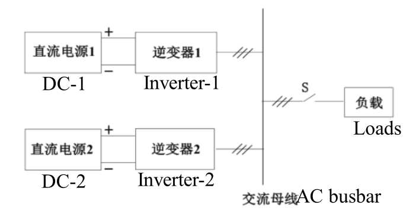
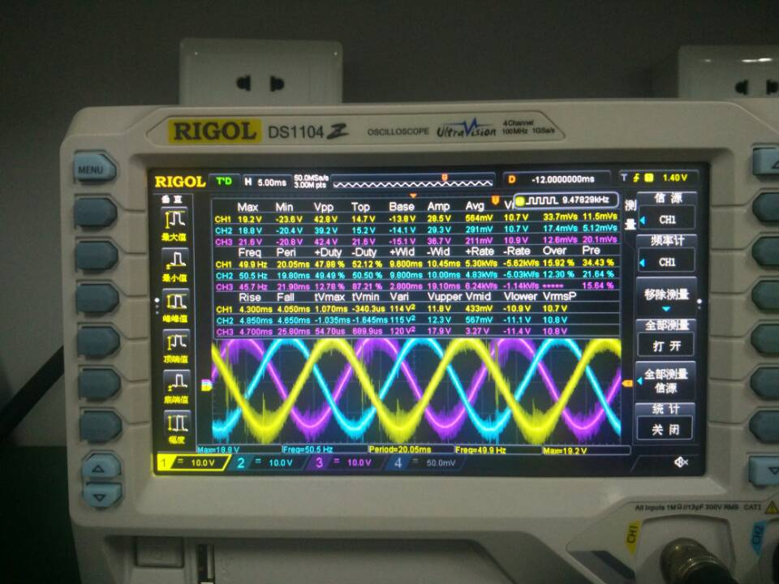
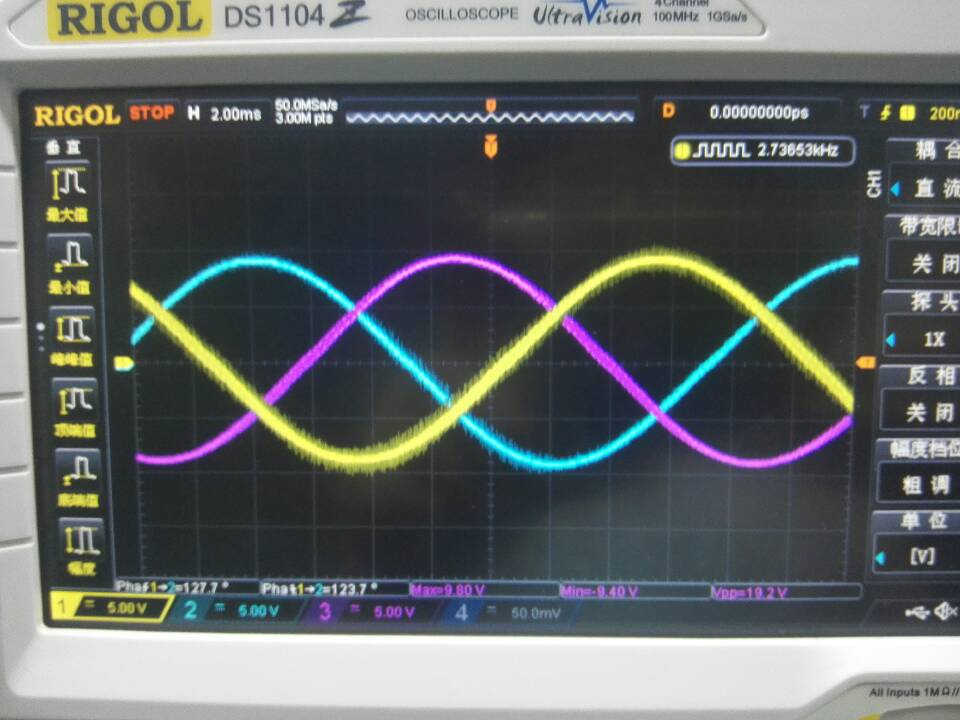
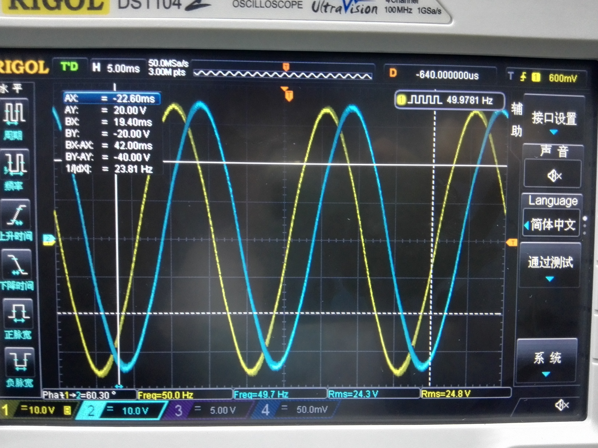
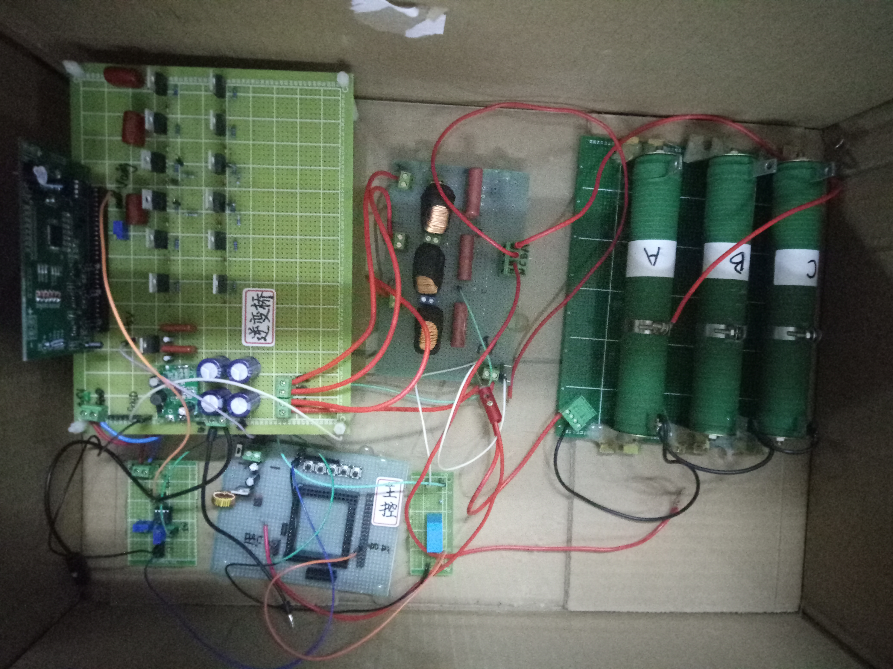

TI Cup: National Undergraduate Electronics Design Contest - A micro-grid system
Fig. Oscilloscope Graph of Three-phase AC Voltage
|
The contestants were required to design and make a micro-grid simulation system consisting of two three-phase inverters and other loads within four days and three nights. The system frame diagram is shown in Figure 2. The load is a three-phase symmetrical resistance connected by Y-type.
1.1 Basic Requirements (1) Close S and provide three-phase symmetrical AC power to the load with inverter 1 only. When the load line current RMS value is 2A, the line voltage RMS value is 24V±0.2V and the frequency is 50Hz±0.2Hz. (2) Under the working conditions of basic requirement (1), the total harmonic distortion rate (THD) of AC bus voltage is not more than 3%. (3) Under the working conditions of basic requirement (1), the efficiency η of inverter 1 is not less than 87%. (4) When inverter 1 supplies power to the load and the load line current RMS value varies between 0 and 2A, the load regulation rate is less than 0.3%. |
a) Voltage and current closed-loop control(PID).
b) Coordinate transformation Matrix(Clarke and Park Transforms).
c) Space Vector Pulse Width Modulation(SVPWM) and Sinusoidal Pulse Width Modulation(SPWM).
Fig. Block diagram
During testing, our system achieved excellent performance that far exceeded the basic requirements. The line voltage RMS value is 24.01V, the frequency is 49.98Hz, the total harmonic distortion rate (THD) of AC bus voltage is 0.69%, the efficiency η of inverter 1 is 91.12%.
Fig. The vanilla version.
Fig. The filtering.
Fig. Voltage closed-loop Control.
Fig. Physical display